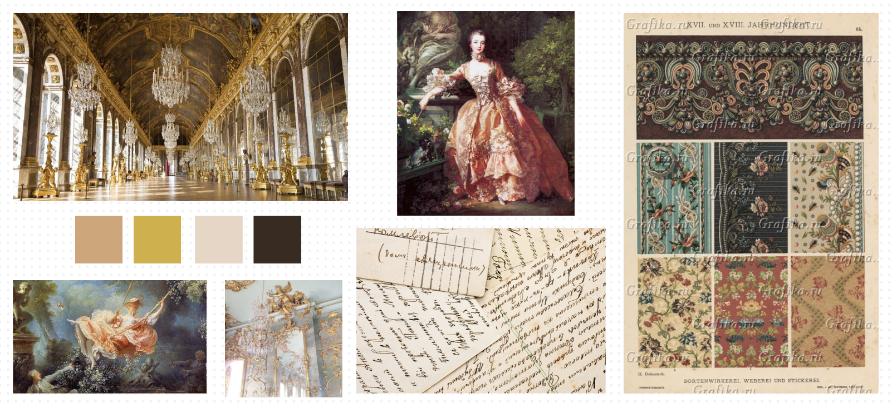
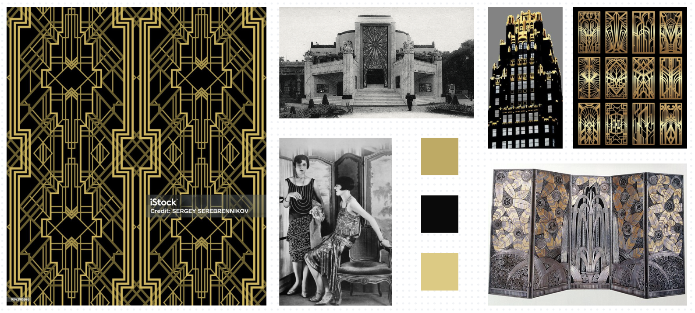
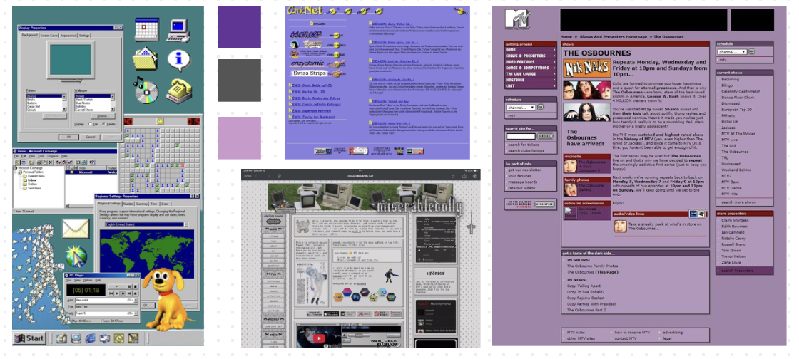
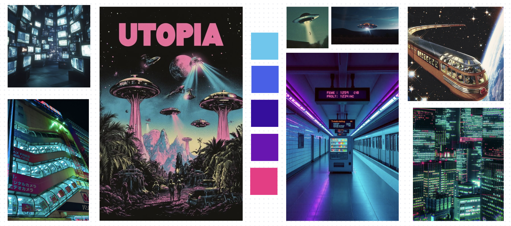

Documentation
Website structure
The website is organized as a exhibition environment made up of several interconnected pages, each with its own role.
The Home page serves as the main entry point. It welcomes the user and invites them to choose one of three possible paths for exploring the online exhibition.
Once a user selects one of these paths, they are taken to that path’s introductory page, and from there to the first object included in it. Each path is designed as a sequence, so the visitor moves through the exhibition step by step. At the end of every path, the user reaches a final Thank You and Goodbye! page, which gives a sense of closure to the visit.
Each exhibition object has its own individual HTML page On these pages, the user can see an image of the item together with its description. A switcher allows the visitor to choose between three different versions of the text, making the content more flexible and accessible for different audiences. Below the main description area, there is a metadata section, as well as Back and Forward buttons.
The Map page presents the exhibition through an interactive map with clickable points that link directly to specific objects.
The Collection page brings together all exhibition items in the form of cards, allowing the user to browse the full set of objects more freely.
Other pages provide contextual and supporting information. The Disclaimer page includes notes about copyright, data sources, and related legal information. The About Us page introduces the project team. Finally, the Documentation page explains the site’s structure, design choices, and other aspects of the development process.
Design choices
The website includes four graphical themes that allow the same exhibition content to be experienced through different visual languages. The theme switch is integrated directly into the interface and is available across the site, with four selectable options represented by icons.

1. The Baroque theme is based on the aesthetics of the Baroque and Rococo periods, and all design decisions are derived from their characteristic features such as ornamentation, fluidity, and visual richness.
Typography combines the decorative font "Great Vibes" with the serif typeface "Prata" . We used "Great Vibes" for headings and navigation to mimic calligraphic lettering, while "Prata" ensures readability in body text.
The color palette is inspired by historical materials and interiors. We chose a warm ivory background (#FFF8F0) and dark brown text (#3A2A1F) to create a soft and not visually overloading base, while gold (--rococo-gold: #D4AF37) is used as a key accent color, referencing gilded decoration . Additional pastel tones (e.g. #E8D5C4, #F5D5CC) are used to add soft pink and beige variations that reduce visual heaviness.
We used layered backgrounds, gradients, and soft shadows, including fixed background images to make the theme easy to perceive. Decorative details such (e.g. ornamental symbols and gradient lines) reinforce the historical reference and do not overwhelm the interface.
For Collection page we also used textured “torn paper” shapes, and in main content sections we added semi-transparent backgrounds combined with backdrop-filter: blur, creating a glass-like panel effect. The choice to use textured backgrounds and layered shadows was made to simulate physical surfaces.
We tried to work on the design as a digital reinterpretation of Rococo aesthetics, and translate historical ornamentation and material richness into a usable interface.

2. The Art Deco theme is based on a rich black-and-gold palette that gives the website a glamorous and dramatic look. The background is almost black (#0a0a0a), while the text and decorative details use warm gold tones such as #e0c97a, #c2a95a, and #bfa76a. Content sections are placed on deep brown-black panels (#18120a), which create strong contrast and add to the sense of elegance. The background itself is layered rather than flat, combining a dark overlay, radial gradients, and an image, which gives the page more depth and a slightly theatrical atmosphere.
The typography also helps define the style. The theme uses Antonio and Unica One, with fallback fonts such as Futura and Arial. Together, these fonts create a geometric and refined look that matches the Art Deco inspiration well. The brand title, headings, navigation labels, and buttons all use an uppercase visual language that feels bold, decorative, and carefully designed.
The main content is displayed inside dark semi-transparent panels with a blur effect, double gold side borders, and a soft golden glow. The sticky header follows the same idea, looking more like a decorative frame than a simple navigation bar. The theme switcher is designed as a sharp rectangular control with a black-and-gold gradient, a dark knob, and contrasting border details. Buttons continue this visual style through double borders, gold outlines, and hover effects that make them feel more ornamental and polished.
Overall, this theme makes the online exhibition feel less like a luxury fashion poster or a stylized theatrical space.

3. The 90’s theme is based on late-1990s and early-2000s web design, particularly forum interfaces and portal-style websites. A key visual reference was early versions of the MTV website, which influenced both the layout and color scheme.
The interface uses a dense structure with clearly separated content blocks and strong black borders (2px solid #000000) . This reflects the organization typical of early websites, where information was divided into compact sections.
Typography follows period conventions, using system fonts such as Verdana and Arial at small sizes (11px), recreating the high information density of forums. The color palette—purple (#663399) for headers and sidebars, lighter violet tones, and a grey background (#E5E2E8) is directly inspired by early web portals and MTV page.
The majority of the interface elements replicate Windows 98-style UI by using borders and inset shadows, creating a 3D effect in buttons and controls. Content is presented as a vertical list with alternating row backgrounds, referencing forum thread layouts, and interactions remain minimal, relying on basic underlined links and simple buttons.

4. The Futuristic theme presents the website through a cyber-inspired visual style built around neon light, dark surfaces, and glass-like effects. Its color palette is cool and vivid: the background is a deep blue-black (#0a0a0f), the main text is a soft light grey (#e8e8f0), and accent colors include cyan, electric blue, violet, purple, and magenta. These colors appear in gradients, glowing borders, and highlights, giving the interface a strong futuristic feel.
The theme uses Orbitron and Rajdhani. Orbitron gives headings and interface elements a sci-fi look, while Rajdhani keeps the body text clear and easy to read.
One of the most distinctive elements of this theme is its use of glassmorphism. Content is placed inside semi-transparent panels with blur, rounded corners, cyan borders, and glowing shadows, which makes the page feel layered and more immersive. The header and navigation follow the same style, with a dark translucent background, cyan glow, and a rounded theme switcher with a bright gradient knob.
This theme also transforms interactive content elements. The collection section uses rounded translucent cards with blur and glowing borders instead of flat blocks. Tabs are styled as soft luminous interface controls, and selected tabs switch to bright cyan-blue gradients. On item pages, text panels and form elements such as visitor selectors use transparent dark backgrounds, glowing borders, and neon focus effects.
This theme makes the exhibition feel experimental, digital, and forward-looking.